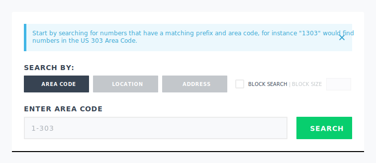

Background
Voyant Admin is a tool for enterprise and wholesale telecom administrators to manage their account with Voyant. Admins can use the tool to set up SIP Trunking voice service, or build their own telecom solution using our public APIs. Users of this platform are highly trained in the world of telecom and expect features that allow to them design a system based on their needs.
Problem
Under-delivered product launch
Voyant admin launched as the modern interface for a new SIP trunking platform. While the company had many years of experience selling SIP Trunking as a product it made a series of mistakes with the launch of the new product.
- Product strategy decisions changed too frequently. The platform began as the administrative tool for only enterprise SIP trunking, but grew to be the platform for all products and customer types.
- Access to existing tools was revoked before feature parity could be built into Voyant Admin. Wholesale and resale partners lost vital tools to run their business.
- The company lacked any internal product documentation from previous platforms, nor were product requirements written before beginning development.
- The development teams lacked direction from product managers. Each dev team dictacted their own priorities and product requirements.
Leaning on customer operations to take up the slack
To bypass the shortcomings of Voyant Admin, we leaned on the customer operations team to do manual tasks. Customers were directed to contact the operations team instead of attempting to use the interface.
Personas
- Goals
-
- Purchasing phone numbers as the company expands
- Managing the extension dialing setup for their office
- Creating IVR (Interactive Voice Response) menus for departments
- Managing outbound caller names
- Managing emergency registrations
- Motivations
-
A company's telecom system is just one of many responsiblities that an IT department has. Managing SIP trunking services happens in multiple places, most which is on the interface for their PBX (Private Branch Exchange). In general, they don't need to be in Voyant Admin very often, so they're not going to learn to be experts at it.
- Frustrations
- Management of a telecom system happens on many different platforms and there's no central tool to sync them.
- Goals
-
- Purchasing phone numbers as the company expands
- Managing the extension dialing setup for their office
- Creating IVR (Interactive Voice Response) menus for departments
- Managing outbound caller names
- Managing emergency registrations
- Motivations
-
A company's telecom system is just one of many responsiblities that an IT department has. Managing SIP trunking services happens in multiple places, most which is on the interface for their PBX (Private Branch Exchange). In general, they don't need to be in Voyant Admin very often, so they're not going to learn to be experts at it.
- Frustrations
- Management of a telecom system happens on many different platforms and there's no central tool to sync them.
Research
Customer Interviews
Since the existing iteration was built without customer input, we began a listening campaign by reaching out to customers for feedback.
In our conversations we learned that our customers have very specific needs when purchasing numbers. At the scale of reselling that they do, free local calling does not exist. Therefore they are always looking to purchase numbers to connect calls as cheaply as possible.
Gathering User Stories
Reference Material
Inteliquent API Guide
Our number inventory was sourced entirely from our parent company, Inteliquent. By referencing it, we found that the requested functionality was already available.
Now we can perform search in multiple ways like rate center, city/zip and postal code search along with radius or sequential or local area option.
We can perform search as mentioned below
- Addition of the “City/State” and “City/State with Radius” searches
- Addition of the “Postal Code” and “Postal Code with Radius” searches
- Addition of the local option within a subset of the searches like “Rate Center” or “City/State” or “Postal Code”
- Addition of an option to toggle between Wireless or Wireline search
Telephone Number Search Rules
tnMaskortnWildcardare required (even if searching for all TNs).tnMasktakes priority if both are specified.rateCenter,city, andpostalCodeare mutually exclusive.- If
cityis specified, theprovincemust be specified. radiusis only valid ifcityandprovinceorpostalCodeare specified.radius,localCallingArea, andsequentialare mutually exclusive.- In case of
localCallingArea, NPA-NXX takes priority ifcityorprovinceorrateCenterspecified. - If
localCallingAreais specified, one of the following must be true: tnMaskortnWildcardspecify the NPA-NXX (first six digits)rateCenteris specifiedcityandprovinceare specified (without aradius)postalCodeis specified (without aradius)- If
wirelessis specified, the customer must be configured to allow ordering wireless TNs.
| Parameter | Required | Description |
|---|---|---|
tnMask |
Yes* | Telephone number, Must be exactly 10 characters. Accepts numbers 0 through 9 . Enter x or X or space as wildcard. (e.g. 312xxxxxxx , xxx4xxxxx1 , xxxxxxxxxx ) |
tnWildcard |
Yes* | Telephone number. Accepts 0-9, Aa-Zz, *, or ? (e.g. *Hello* or 312?Hi*7 ) |
lata |
No | Three-digit local access and transport area code |
rateCenter |
No | Rate center abbreviation (e.g. WSHNGTNZN1 ) |
province |
No | Two-letter state or province abbreviation (e.g. IL , CA ) |
city |
No | Name of the City to search for numbers |
postalCode |
No | Postal Code to search for numbers |
radius |
No | Radius to search for numbers within specified limit. Maximum acceptable value: 50 (miles) |
quantity |
No | Maximum number of results to return; partial quantity may be returned based on inventory |
sequential |
No | Enter true to return sequential numbers (up to 99) |
wireless |
No | Enter Y or N to retrieve wireless or wireline numbers. |
localCallingArea |
No | Enter Y or N to retrieve local calling area numbers. |
searchOnNetOnly |
No | Enter Y or N to include or exclude offnet numbers from search results. |
tnWildcard interpretations |
|
|---|---|
| Character | Interpretation |
| 0 - 9 | No translation |
| Aa - Cc | Translated to 2 |
| Dd - Ff | Translated to 3 |
| Gg - Ii | Translated to 4 |
| Jj - Ll | Translated to 5 |
| Mm - Oo | Translated to 6 |
| Pp - Ss | Translated to 7 |
| Tt - Vv | Translated to 8 |
| Ww - Zz | Translated to 9 |
| * | Any character sequence |
| ? | Any single character |
UX Solutions
Existing Number Search Fields
Problems
rateCenter. This functionality is completely missingaddress. A parameter not supported by the APItnMask or tnWildcard search by entering them in the area code field. However users didn't know about it.